Ayuda del Sitio
Selecciones (listas personalizadas)
Crear una selección:
Marque el/los producto/s que desea, para agregarlo/s a una lista personalizada que podrá consultar con posterioridad independientemente del resto de los productos, o haga click en Marcar todos para seleccionar todos los productos listados (recuerde que esta función sólo es útil si aplicó alguno de los filtros):
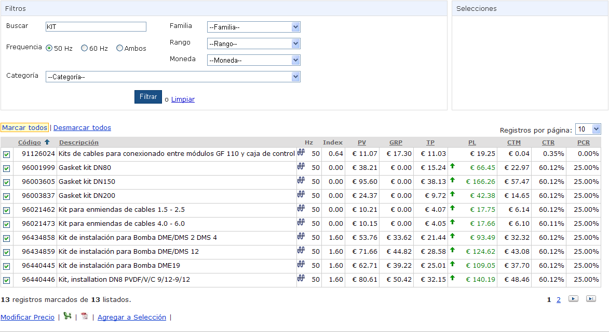
Haga click en Agregar a Selección, y luego en Crear una nueva:
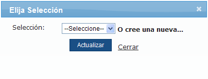
Complete una descripción para la nueva selección:
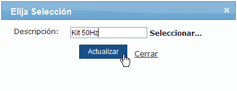
Haga click en Actualizar para guardar la lista, que se agregará en Selecciones, o en Cerrar para dejarlo sin efecto (recuerde que se agregarán todos aquellos productos con el mismo código, independientemente de los Hz).
Agregar a una selección:
Marque el/los producto/s que desea agregar a una lista ya creada, o haga click en Marcar todos para seleccionar todos los productos listados (recuerde que esta función sólo es útil si aplicó alguno de los filtros):
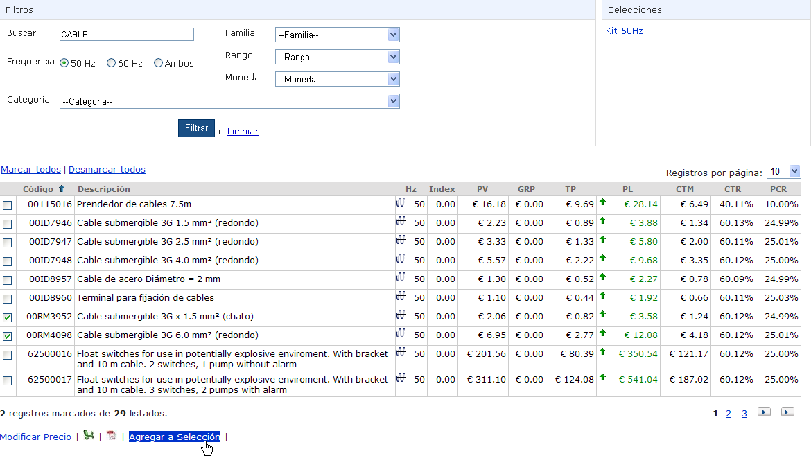
Haga click en Agregar a Selección, y escoja la deseada de la lista desplegable:
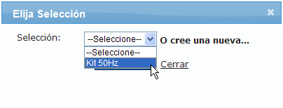
Haga click en Actualizar para guardar el/los producto/s a la lista seleccionada, o en Cerrar para dejar sin efecto.
Quitar de una selección:
Haga click en una selección para abrirla (recuerde que podrá utilizar los filtros dentro de la selección para encontrar los productos deseados):
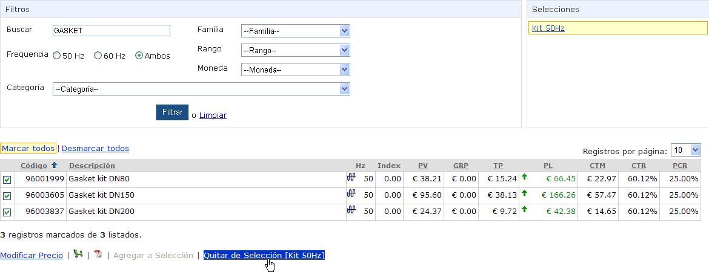
Marque el/los producto/s que desea quitar, y haga click en Quitar de Selección […] para borrar el/los producto/s marcado/s de la selección.
Eliminar una selección:
Haga click en una selección para abrirla:
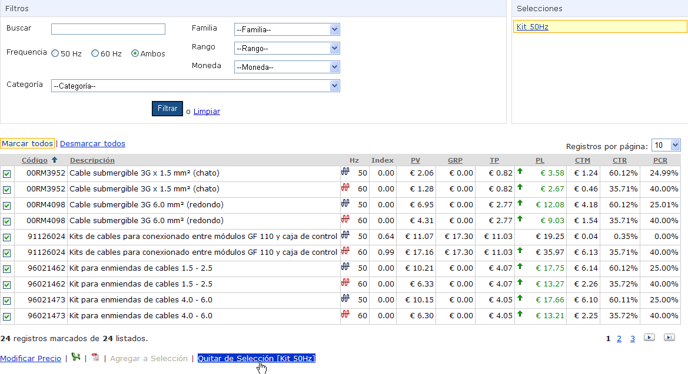
Haga click en Marcar todos, y luego en Quitar de Selección […] para eliminar dicha selección.
Modificación de Precios
Modificación individual:
Haga click sobre el producto que desea actualizar, para abrir el cuadro de diálogo de modificación:
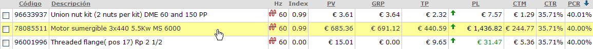
En el cuadro de modificación, complete el valor según:
Valor (moneda): reemplaza el precio de lista existente por el valor ingresado, modificando así el precio de venta, el CTM, el CTR y el PCR.
Valor (%): actualiza el precio de lista, sumándole el valor ingresado, modificando así el precio de venta, el CTM, el CTR y el PCR (que tendrá el valor ingresado).
CTR (%): reemplaza el CTR por el valor ingresado, modificando así el precio de venta, el precio de lista, el CTM y el PCR.
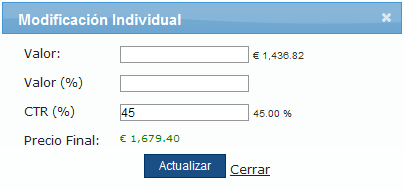
Haga click en Actualizar para generar el cambio, o en Cerrar para dejarlo sin efecto.
Modificar varios precios, o modificación masiva:
Marque los productos que desea actualizar, o haga click en Marcar todos para seleccionar y actualizar todos los productos listados.
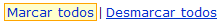
En el cuadro de modificación, complete el valor según:
Valor (%):actualiza el precio de lista, sumándole el valor ingresado, modificando así el precio de venta, el CTM, el CTR y el PCR (que tendrá el valor ingresado).
CTR (%):reemplaza el CTR por el valor ingresado, modificando así el precio de venta, el precio de lista, el CTM y el PCR.
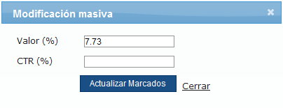
Haga click en Actualizar Marcados para generar el cambio, o en Cerrar para dejarlo sin efecto.